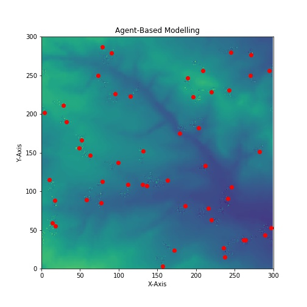
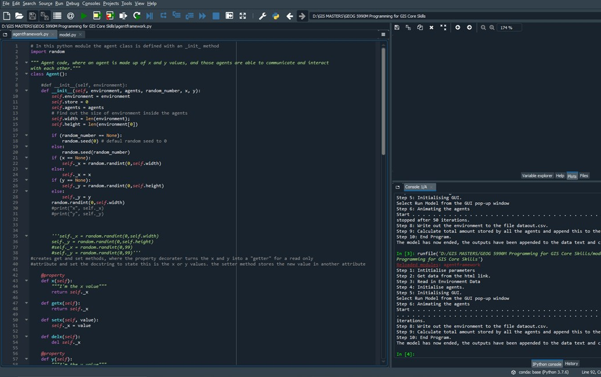
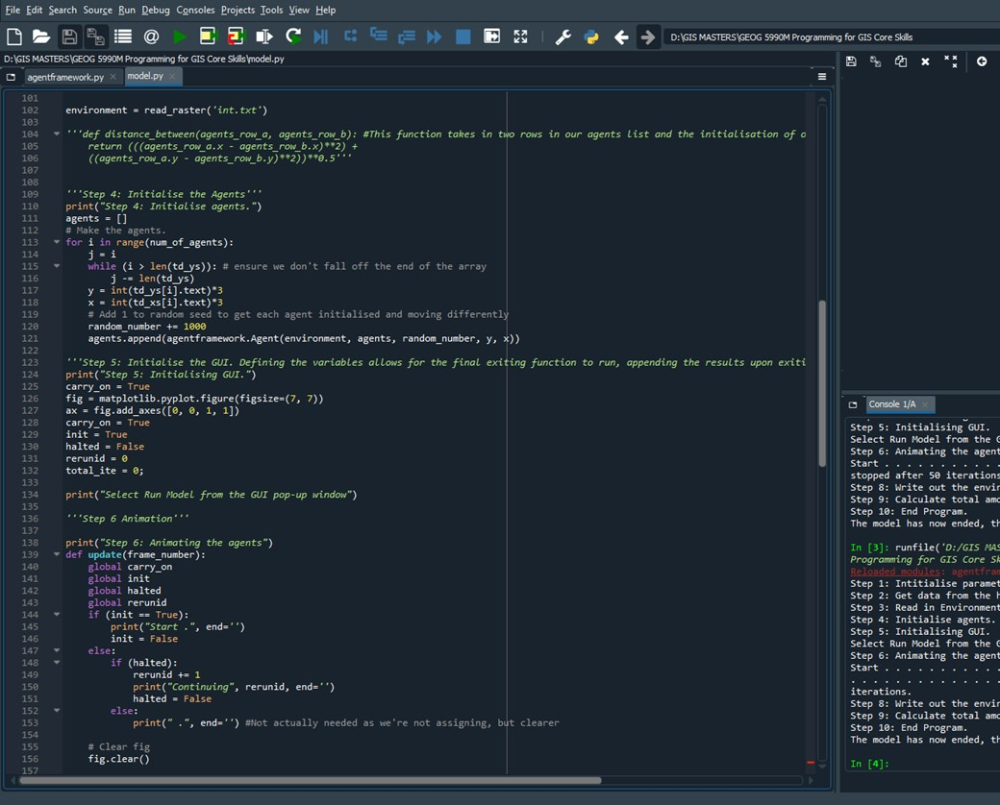
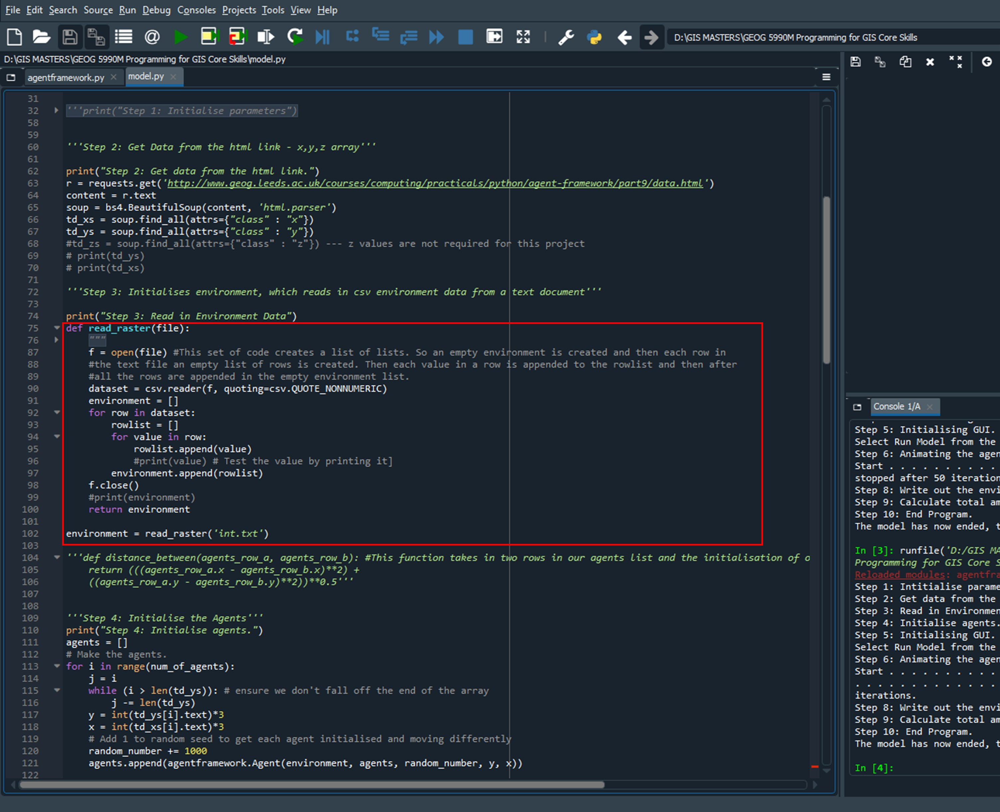
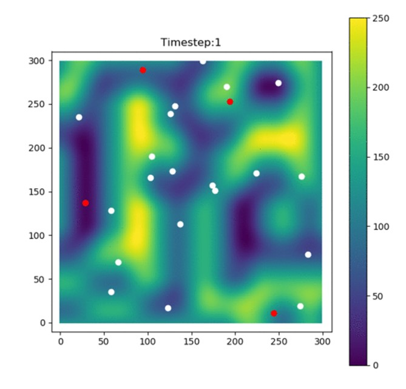
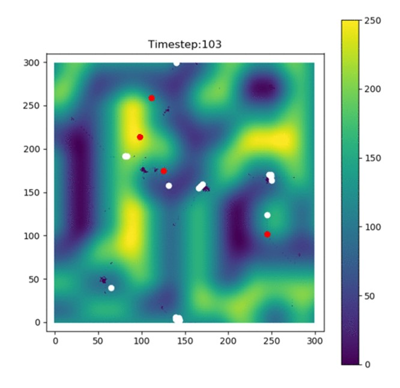

Code: Agent-Based Model
The ABM (Agent-Based Model) produced is a simple system, where there are 50 agents in an environment read through a csv file, with width and height values of 300x300 cells. Using Matplotlib pyplot animations, these agents move around the environment, eating the environment up, at a set number of iterations, which for this purpose is set to 100. The amount of agents; the number of iterations and what the agents do can all be changed through the code. The agents move randomly and as the move, they eat the environment and store them. They can share the resources gained with other agents that are nearby through the share_with_neighbours function. The data is then output to a scattergraph as shown below.

Figure of the finalised Agent-Based Model, where 50 agents across the environment have moved a total of 100 iterations and eaten the environment and stored along the way.
As stated in the Home section, there are three components that build this ABM, the Model, the Agent and the Environment. The Agentframework acts as our Agent section of the ABM. This script starts by importing the random module. Several variables can then be defined using _init_ methods such as, agents, environment, store, x and y values (As well as stating the set, get and del properties for x and y). The other defined variables include, eat, move, and share with neighbours functions.

Code snippet of the finalised Agent-Based Model. The figure shows part of the agentframework.py code, where variables are defined by a _init_ method in an agent class.
The Model script starts off importing several modules and states the starting parameters, i.e number of iterations, number of agents, store value of the agents etc... Data is then gathered from the web through a url link using soups in which, the data is random x,y,z values. The environment is then loaded in via the csv reader from a text file containing the environment data. The x and y values are then initialised, with the starting values of x and y multiplied by 3 due to the web data being in the range of 0-100, when the width and height limits of the environment is 300x300 cells. The agents are then animated thus, they move and eat the environment through 100 iterations and this is plotted using matplotlib.pyplot function onto a scatter-graph. When the model is exited, the animation is halted, and the total amount of data stored is appended to csv and text documents.
 
Code snippet of the finalised Agent-Based Model. The top figure shows an example of the model.py code, initialising the agents. The bottom figure shows the environment inside the model.py code denoted by the red box.
This model acts as a foundation Agent-Based Model thus, the model can be adapted to show population dynamics. For instance, there are two other agent subclasses, the predator and the prey. The agent is able to eat and move in this simple model, but for a predator-prey application, each agent could reproduce, age, sleep and die, so where these functions are added, an applicable population model can be produced. An example of this predator-prey ABM is below. Click on Links in the navigation bar for the links to the model, as well as summarisation of the code structure.
 